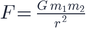
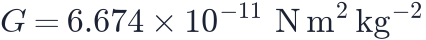
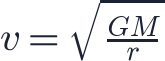
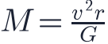
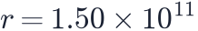
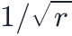

In this lesson you will learn
|
The force that rules the cosmos
Four fundamental forces are known: gravity, electromagnetism, and the strong and weak nuclear forces. Gravity is by far the weakest of them, yet it governs the universe on large scales. Why?
- The nuclear forces only act inside atomic nuclei.
- Electric charges come in positive and negative, and large objects are almost perfectly neutral, so their electric forces cancel.
- Gravity is always attractive and never cancels. Every bit of mass adds to it, so it wins for planets, stars, galaxies and the universe itself.
Newton's law of gravitation
In 1687 Isaac Newton proposed that any two masses and separated by a distance attract each other with a force

where

is the gravitational constant. Two properties matter most:- The force grows with mass: twice the mass, twice the pull.
- It weakens with the square of distance: twice as far, a quarter of the pull. This is an inverse-square law.
The same law explains a falling apple and the Moon's orbit.
Orbits weigh the universe
An object in a circular orbit of radius around a mass moves at the speed where gravity supplies exactly the needed inward pull:

Turn this around and you get a cosmic scale: measure the orbital speed and the radius, and you know the mass inside the orbit,

Weighing the Sun The Earth moves at about 29.8 km/s at  m. Then kg, the mass of the Sun. |
Notice that far from a central mass the orbital speed should fall as

. Planets confirm this: Neptune moves much more slowly than Mercury. In lesson L3.2 we will apply the same idea to stars orbiting in galaxies, with a surprising result.Try it: Galaxy Rotation Curve Switch the dark matter halo off and see the expected orbital speeds fall with distance. |
Einstein: gravity is geometry
Newton's law works extremely well, but it does not explain how gravity acts across empty space, and it is not compatible with the finite speed of light. In 1915 Albert Einstein published general relativity, a completely new picture:
Matter tells spacetime how to curve; spacetime tells matter how to move Space and time form a single four-dimensional fabric called spacetime. Mass and energy curve it. Objects moving freely follow the straightest possible paths in this curved spacetime, and these paths look to us like orbits and falls. |
A common analogy is a heavy ball on a stretched rubber sheet: it makes a dip, and a marble rolling nearby curves towards it. The analogy is imperfect (it uses gravity to explain gravity!) but captures the idea that geometry replaces force.
General relativity predicted effects Newton's theory cannot explain, all since confirmed:
- Light is bent by mass: gravitational lensing.
- Clocks run slower in strong gravity (GPS satellites must correct for this).
- Mercury's orbit slowly rotates in a way Newton's theory cannot fully explain.
- Accelerating masses emit gravitational waves, detected directly in 2015.
Why this matters for cosmology
General relativity describes not only objects in space but space itself. Applied to the whole universe, it allows space to expand or contract. This is the foundation of modern cosmology.
Newton is often enough Remarkably, many results of relativistic cosmology can be derived with Newtonian gravity applied to an expanding sphere of matter. We will use this approach in lesson L2.3 to obtain the Friedmann equation. |
Remember this
|